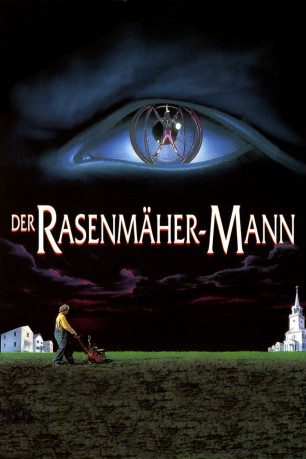

#6408 Der Rasenmähermann
Alternativ: The Lawnmower Man
 
 IMDB-Wertung: 5.4 / 10
IMDB-Wertung: 5.4 / 10  Metascore: 0
Metascore: 0 
Der geistig zurückgebliebene Hilfsgärtner Jobe Smith entwickelt sich durch Computer-Experimente des Wissenschaftlers Lawrence Angelo zum intelligenten Menschen. Smith wird von dessen früheren Vorgesetzten zu einem mordlüsternen Monster umgepolt, das sich anschickt, die Welt zu beherrschen...
Jahr: 1992
Dauer: 140 Minuten
FSK: 16
Land: England Studio: Astro DistributionTonspuren: DD5.1 - ,
Untertitel: Englisch,
Auflösung: 720p (1280x696) Größe: 8048 MB
Genre: Horror, Sci-Fi
Regisseur: Brett Leonard
Drehbuch: Stephen King
Soundtrack:
Darsteller:
 Jeff Fahey als Jobe Smith
Jeff Fahey als Jobe Smith Pierce Brosnan als Dr. Lawrence Angelo
Pierce Brosnan als Dr. Lawrence Angelo- Jenny Wright als Marnie Burke
 Mark Bringelson als Sebastian Timms
Mark Bringelson als Sebastian Timms Geoffrey Lewis als Terry McKeen
Geoffrey Lewis als Terry McKeen- Jeremy Slate als Father Francis McKeen
 Dean Norris als The Director
Dean Norris als The Director Troy Evans als Lieutenant Goodwin
Troy Evans als Lieutenant Goodwin- Rosalee Mayeux als Carla Parkette
- Austin O'Brien als Peter Parkette
 Michael Gregory als Security Chief
Michael Gregory als Security Chief- Joe Hart als Patrolman Cooley
 John Laughlin als Jake Simpson
John Laughlin als Jake Simpson- Ray Lykins als Harold Parkette
 Dale Raoul als Dolly
Dale Raoul als Dolly Frank Collison als Night Gate Guard
Frank Collison als Night Gate Guard- John Smart als Assistant
 Doug Hutchison als Security Tech
Doug Hutchison als Security Tech Bruce Holman als Crime Scene Detective , uncredited
Bruce Holman als Crime Scene Detective , uncredited- Darrell Mapson als Guard - Struggle with Dr. Angelo , uncredited
- Colleen Coffey als Caroline Angelo
- Jim Landis als Ed Walts
- Michael Valverde als Day Gate Guard
- Stephen Gregory Foster als Letchworth
 Denney Pierce als Skinhead Guard
Denney Pierce als Skinhead Guard- Roger Rook als Older Guard
- Craig Benton als White Coat
- Randall Fontana als Hotel Waiter
- Mara Duronslet als Young Woman Clerk
- Duane Byrne als Letchworth Buddy
Datei: X:\Person\Stephen King\Rasenmähermann, Der (1992, FSK16, 1280x696).mkv seit 20.06.2017
Festplatte: HD Collection-7+mehr(A-Z)+Person
 Es gibt insgesamt 44 Filme in der Gruppe 'Person\Stephen King'
Es gibt insgesamt 44 Filme in der Gruppe 'Person\Stephen King'